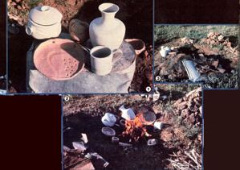
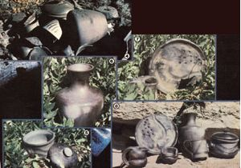

Some of the worlds mpost beautiful ceramic ware has been-for centuries-produced by an effective firing technique, using...
In 1909 the head of an archaeological expedition in New Mexico asked Maria Martinez-a member of the San Ildefonso Pueblo-to duplicate several types of ancient pottery . . . with nothing to go on but a few shards the team had recovered. Well, Maria not only accomplished this task, but was able to fire the reproductions by means of a very old technique that has been used, with slight variations, by primitive potters all over the world.
An outdoor kiln like the one Maria constructed (to keep her reproductions as accurate as possible) is perfectly suited to the needs of today's rural craftspeople, too. In fact, it can be built by anyone who has access to an open space, some dry cow or horse manure, twigs, scrap metal, and a supply of broken pottery.
SCAVENGE A KILN
The necessary quantity of each of the above kiln-making materials will be easy to determine after the first firing, since any "recipe" mistakes made during the initial attempt can be adjusted the second time around. Needless to say, you won't want to start with your best artwork ... fire only your expendable pieces on the trial run.
For a small firing of 10 six-inch pots, you should gather at least a large shopping bag full of twigs and one of manure. The scrap metal can be rusted roofing, large flattened cans or old stovepipe, and so forth . . . and, if no pottery shards are available, cracked ceramic dinnerware can be used as a substitute. Just keep in mind that you'll need enough shards and scrap to prepare a layer of each under the to-be-fired pottery and over it.
PATIENCE MAKES PROGRESS
It's best to process your wares on a cool and windless day (early mornings are often the best). Otherwise, the smoke-instead of going straight up-may be forced into the kiln's interior, where it can discol or the clay. Furthermore, of course, wind adds to the difficulty of safely tending an open flame.
After first clearing away any brush or grass that might be sparked into an accidental blaze, use a generous quantity of twigs to build a camp-sized fire in a shallow hole in the ground. Set the pots around it, making sure they don't touch one another or become directly exposed to the flames.
The preliminary heating should be very gradual, so begin by placing the ceramics about 12 inches from the fire and thena step at a time-move them closer, turning the pots so that they grow uniformly warm. (This process is extremely important, so be very patient ... a rapidly heated piece of earthenware can suddenly pop and break. If one does shatter, pull the others back a little from the flames and take more time in heating them.) When the pieces become too hot to handle, move them carefully away from the fire, using gloves or a stick.
Now, place some of the flat scrap metal over the flames . . . completely cover that with shards . . . arrange the heated pottery (again, no two pieces should be allowed to come in contact with each other) on top of the pile . . . gently cover it with a second layer of ceramic shards . . . and top the heap off with overlapping sheets of metal scrap. This, then, is your kiln. Just be sure that your ceramics are entirely encased by the salvaged materials, which serve to protect them from both direct flame that could break them and smoke that would smudge them.
At this point, stack a thick layer of dry manure (which will burn quite rapidly and evenly, hold its shape right down to the embers, and prevent the wares from cooling too quickly) on top and around the kiln, and cover it with the remaining twigs. Then use straw or scrap paper to light the fuel in several places, so that the heat is distributed evenly.
Regular tending of the kiln is important ... both because an unwatched fire can easily spread and because an untended blaze won't produce the best results possible. You should, for example, add more dry twigs and manure when necessary to maintain an even heat. Once again, patience is required. Don't rush the process: Beyond adding fuel to prevent premature burnout in a particular area, simply allow the flames to die down and the ashes to cool on their own. The pots will probably stay hot for a long while, though, so remove them with great care. As soon as you can handle your pottery, however, wipe the fired pieces with an oily rag and then allow them to cool completely. They should be, generally speaking, the color of the clay you used . . . unless the wind has forced smoke down inside the kiln and darkened them.
DIFFERENT EFFECTS
If, however, you want to produce black pottery, you can simply place the scrap metal and the shards loosely around your creations. Then, after the fire has almost burned down, dump another layer of crumbled manure on top of the coals, to shut out the air and produce a lot of smoke. The fumes will enter the kiln through the cracks you've left and stain the pottery's surface.
Other variations in appearance are possible, as well. For example, when the still-unfired clay pots are at the leather-hard (not thoroughly dry) stage, you can rub them vigorously with a polished stone or the back of a spoon. This produces a lustrous finish that is enhanced by the heating process.
Designs can be carved into the leathery pots, too. Such surface sculpting requires few modeling tools: Common household implements are ideal for etching.
By coupling one or both of these techniques with either "open" or "shut" kiln construction, the backyard potter can achieve a wide variety of satisfying results. All in all, I think you'll agree that outdoor firing is an excellent method of expanding a ceramist's repertoire!
|
 ROD ANDERSON |
 ROD ANDERSON |
|